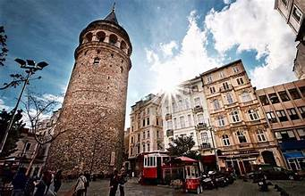
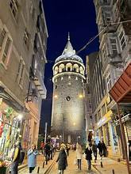
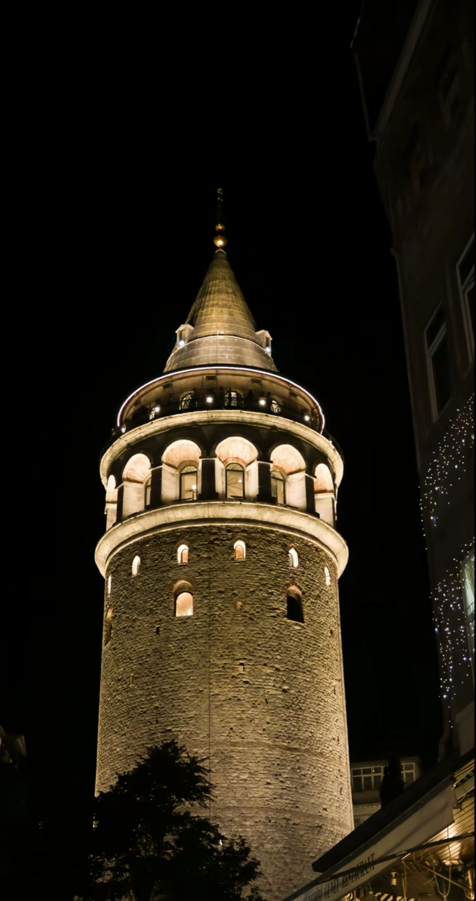

Legend & Story
According to a famous legend in Istanbul, if a man and a woman climb Galata Tower together for the first time, they are destined to marry each other. This romantic belief has made the tower a popular place for couples hoping for true love.
Another legendary story says that in the 17th century, Hezarfen Ahmet Çelebi jumped from Galata Tower using handmade wings and successfully flew across the Bosphorus to Üsküdar. Because of these stories, Galata Tower is seen as a symbol of love, courage, and dreams in Turkish culture.
Photo Gallery


